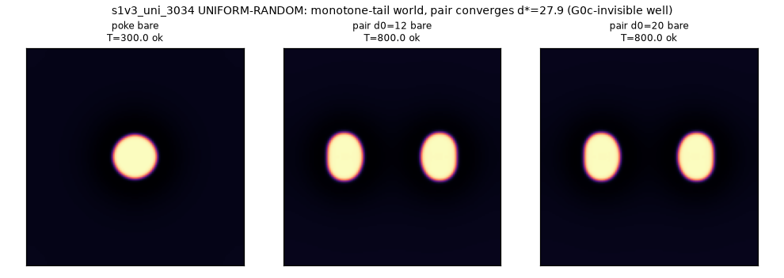
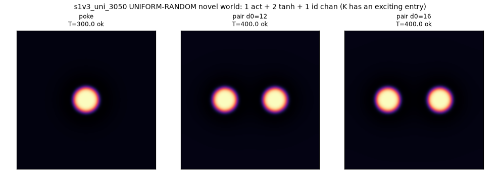

Phase 2 clarified the working structure of blob science as a ladder of description levels:
| level | what is given | what you study | example |
|---|---|---|---|
| L1 — field level | only the PDEs and initial conditions; every field (including b) dynamical | what landscapes/structures the physics builds on its own | M6: trails, self-launch, b-assembly, the standing sawtooth |
| L2 — background level | a hand-written static b landscape | what dynamics the landscape can host | M5 machine: saw track + rails; RT3 ring valleys |
| L3 — molecule level | bonds/rotors/trains taken as certified components | what circuits and machines the components compose into | relay tug; rotor-based devices (future) |
The doctrine: findings at a higher level must be reducible to the level below by a learned process — L2 landscapes should be reachable as L1 fixed points (the inverse problem: can deposition + relaxation evolve b into the sawtooth-and-rails the machine needs? the phase-2 teaser says the sawtooth, at least, is a natural attractor), and L3 components must carry their L2/L1 certificates (bond curves, dial laws, stability windows). Higher levels buy speed of exploration; reduction buys legitimacy — a machine sketched at L3 is a conjecture until its landscape is demonstrated at L2 and, ultimately, grown at L1. The two phase-2 tracks are therefore not merged but stacked: L2 work discovers what is worth wanting; L1 work discovers what can be grown; the reduction map between them is itself a research object.
The bottom-up search (L0), status. The genome/funnel/assay stack is built and certified (reproduces every reference world to 5 digits; the spatial-eigenvalue screen predicts bond shells of unseen worlds to ~±15%). Stage-1 yield curves: uniform random finds ~2 alive worlds/100 candidates (but both novel mechanisms so far — including a bond with no oscillatory tails, a second binding mechanism our theory did not predict — came from uniform); jitter around references finds ~49/100 (maps island geography 25× faster). An evolutionary layer (merge = block composition, validated by reconstructing our own vvw and xv design jumps as single merge operations) beats jitter on alive-cells per assay and owns ALL multi-species coexistence cells — it even rediscovered the rotor from M4 parts without the recipe (audited: ω to 4 digits). The 32-worker pod sweep (3,195 candidates, ~$9 of compute) came back: the archive grew 111 → 404 cells. Confirmed at scale: jitter yields 51% alive / 24% bonded; blind-uniform novelty is ~1/600; the bond-shell law settled at d\* = (1.37±0.13 + 0.55k)·wavelength over 830 bonds. New physics found by the sweep: the non-oscillatory "plateau bond" is a robust 41-cell family (a saturating-inhibitor well, invisible to the tail eigenvalues by construction — binding chemistry beyond the funnel's prediction), plus at least one further unattributed binding route; the first 3-species bonded matter (from the evolver's elite line); 13 self-launching worlds; and a program speed record — c = 0.204, a jittered descendant of the evolver's rediscovered rotor, 45% faster than anything hand-designed (controller-audited to 4 digits). Every candidate carries its selection provenance (anthropic-screening doctrine).
Every world in the search is a point in one canonical family — n cubic activators coupled to m linear-or-saturating channels:
The genome is {acts: (λ, k₁, D_u)ᵢ, chans: (τ, D, g)_c, W, K} — and because every channel is driven by deviations (u−u₀), the uniform vacuum is an exact fixed point for any weights: the iso-line trick as architecture. All five hand-built worlds (M0, the motility line, vvw, xv, bfield) are reference points of this family, reproduced to 5 digits by the generic simulator before any sampling was allowed.
Candidates pass a microsecond-scale algebraic funnel before any simulation:
G0c's shell prediction was validated on the certified worlds (10.9px measured vs 10.8 predicted) and then held across 830 bonds of the stage-2 sweep. Blob existence itself is subcritical (a homoclinic orbit — no local criterion suffices), so one seeded poke per candidate settles it; the funnel just makes the poke affordable.
| strategy | alive /100 | bond /100 | role |
|---|---|---|---|
| uniform random | 0.5–2 | ~1 | mechanism discovery (both new binding mechanisms came from here) |
| jitter around references | 49–51 | 14–24 | island mapping (25× cheaper per alive world) |
| evolver merge | 7.7 cells/100 assays | — | composition: ALL multi-species and cross-species cells |
| evolver elite line (e1_9508) | 89.8 | 41.8 | evolved genomes are robust genomes |


Of 996 alive worlds given the kicked travel assay, only 24 travel (2.4%) — self-propulsion is a scarce phenotype in equation space, exactly as the funnel's near-onset analysis predicted. And it is not uniformly scattered: the traveler rate by ancestry is 16% for dynamical-b lines (self-launchers — motility by deposition is the easiest route), 4% for the engine/rotor lines, ~2% for uniform ancestry, and 0% for the M0/M4 and VVW lines (170 and 151 worlds each, not one traveler — the classic families are deeply static away from their tuned onsets). Speed leaderboard: c = 0.304 (XV-line jitter, verified independently to 4 digits ✓), 0.245, 0.208 (both from the evolver's slow-tanh merge line e1_9513), 0.204 (the 3-field engine) — and combining the engine's two best dials (Du×1.1, D_v×0.9) gives the outright program record, c = 0.3439 in a bare 3-field world (verified ✓). For scale: the best hand-designed carrier was 0.143. The two independent motility protocols (census kicks; dial-ladder onsets) agree on the overall rate to within 0.3% — and on the deeper point that all known motility lives in exactly two mechanisms: stigmergic self-launch and two-timescale v/w engines.
Six 3-species worlds got full pairwise encounter matrices (three cross-pairs ×
three distances). Two are machine-grade: s2_111_17 (two distinct
cross-species bonds, zero replication anywhere — the species-rail candidate) and
s2_116_46 (cross-bond in a robust cell). Two replicate on contact
(fragile lines), one is inert. And one — s2_101_58 — shows
kill outcomes: one species consistently eliminates another on close encounter
while surviving itself. That is a predation-like interaction, found by blind search,
not designed. It is parked for the world-catalog phase (a predator–prey blob ecology
is now demonstrably available in this equation space).
Head-to-head stack probes: plateau-bonded stacks (the tanh-well binding family) park motionless at n=2 and n=3, including under working noise, while the M4 control stack shuttles under noise exactly as machine-v2's law cascade predicted. The stack-safety problem is solved by a binding mechanism that blind uniform search found and that our tail-eigenvalue theory is structurally blind to. (Update — the census closed this: the uni_3034 "death" was a job-spec artifact (dressing overdose); re-run bare, its 3-stack parks at 29.3 px under noise, controller-verified. Both family members are usable cargo, and the plateau design rule gives a d\* menu: 14 px fixed, or 20–30 px tunable via the slow-channel τ — stack spacing fully decoupled from tail physics.)
| need (from machine-v2's law cascade) | answer (from the atlas) |
|---|---|
| faster carrier (blade-load margin) | 3-field engine family, c = 0.20–0.30 (2–5× margin) |
| cargo that parks (stack-safety) | plateau-bonded stacks (noise-parked at n=3) |
| species-tagged rails (two-way sort) | s2_111_17 / s2_116_46 cross-bond worlds |